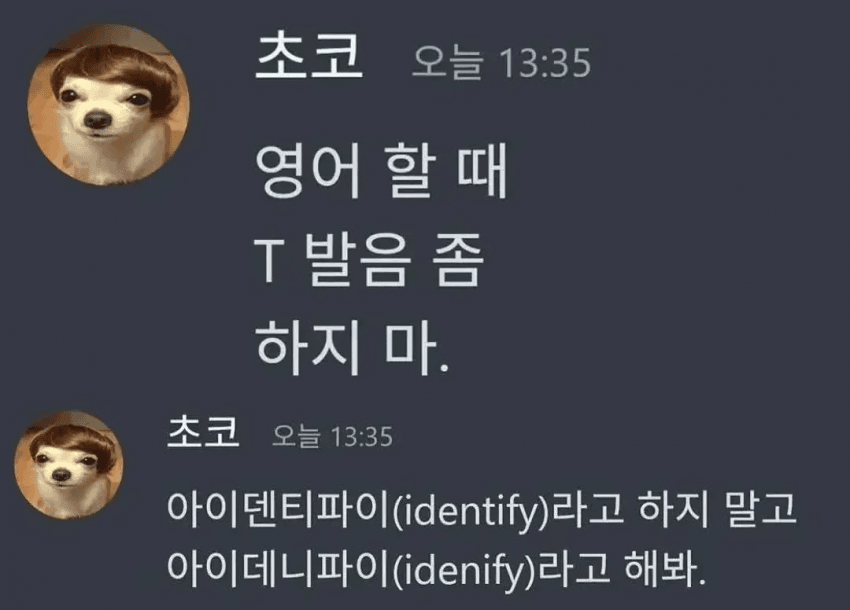
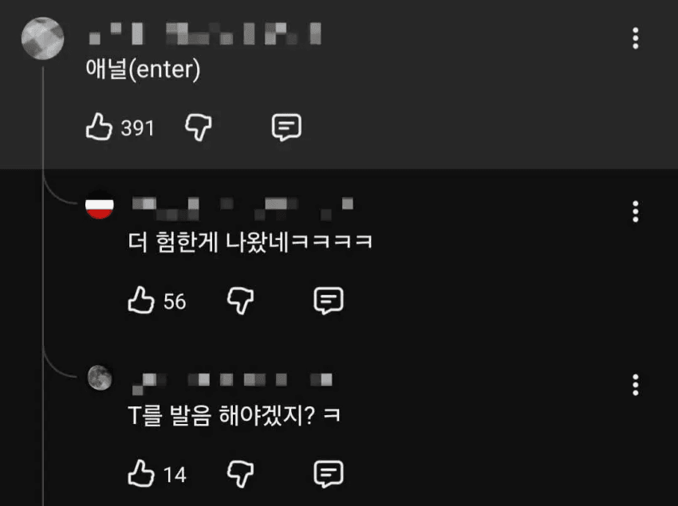

203 · 13 · 19 시간 전 · 원문


수집 당시 댓글 13개
솜털보지 · 11 시간 전
쥐쥬레건
쓰삒끼 · 10 시간 전
애널애널(eternal return)
같은편 · 10 시간 전
버스 너미널
하드코어미식가 · 9 시간 전
에러리스트
↳ 답글 · 코룽 · 9 시간 전
디버깅 해라
↳ 답글 · 뜌따이 · 8 시간 전
t에러리스t
아래아 · 9 시간 전
오이서리
통합협상 · 9 시간 전
ower 아워
순서지킬것이상 · 9 시간 전
해협 미옄
할배냄새 · 9 시간 전
커스커
반지닦이 · 8 시간 전
영어엔 법칙따위 없다
팡파루엣 · 4 시간 전
거북이는 어을임?
초격아츠 · 3 시간 전
병신같은 미국사투리 씨발럼들
쥐쥬레건